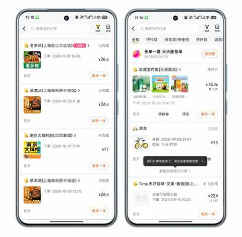
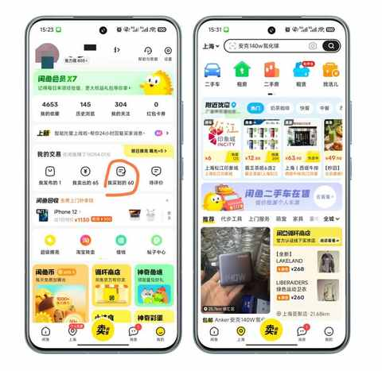

一个中年男人消费观的 3 个转变
一、在悄然中 转变
时间在逐步往前推移，年岁渐长，随身体变化带来的是一系列的连锁反应。
消费观的转变是其中之一，在悄然间我的消费观有了三个明显变化，转变的过程极其丝滑，一如我在去年的某一天发现自己做饭的时候必套上围裙，之前只有很少的时候会用，丝毫不在意油会崩到衣服上。

二、消费观的 3 个转变
消费观的变化不像减肥之类的，身边的人能很快看出来，他们会由衷的说出来自己的心中所想，说瘦了，状态变好了。
同时，他们也会问是怎么瘦的，让你聊聊心得和经验。
消费观的变化往往所有人都是后知后觉，当意识到和之前不一样的时候等某些转变已经完成。
所以，不聊消费观这个概念，只聊聊发生在我身上的 3 个转变。
1️⃣ 非必要不点外卖
下面是美团中去年和今年同期的一个对比，去年点外卖的频次大约是 2-4 次，主要是给娃吃的中饭或晚饭。

今年最近一次点外卖是在 8 月中旬，给给自己点的咖啡套餐。
点外卖频次少挺多的原因，主要还是做饭做多了之后，速度提升的同时整体效率都上来了。
很多时候仅仅是在 APP 里面选择点什么吃的，再凑单或满减费的功夫足够做一顿简餐，如果再点晚几分钟又得多等一些时间才能送到。
一顿简餐基本 15-20 分钟能搞定，只需充分利用家中的厨具，例如：
- 左边的灶蒸蛋，右边的灶煮饺子或煮面条
- 空气炸锅里面放上鸡块或豆腐之类的食物
- 青菜水煮后放油醋汁凉拌
- ……
现在即使不提前计划吃什么，基本上打开冰箱看一眼里面有哪些菜便能决定做什么吃的，冰箱里面的菜越少越容易做决定。
2️⃣ 用二手平台
人难免有冲动消费的时候，更不可避免的是曾经某个东西很有用，但当下已经完全用不上。

这种时候，二手平台就是一个不二之选！
把已经不需要的东西在二手平台卖掉，在二手平台用较低的成本买当下需要的某些东西。
已经卖掉过的东西有：
- iPhone
- 手机壳
- 无线耳机
- 显示器
- 镜头
- 显卡
- 鞋子
- 行车记录仪
- 充电线
- 鼠标
- 键盘
- 自行车
- ……
买到的东西有：
- iPhone
- 雨伞
- 键盘、键帽轴体
- 各种工具的VIP
- 充电头
- 马克杯
- 打印机
- ……
现在已经养成习惯，会定期盘点闲置的物品：把很难再用到的挂在二手平台售卖，在想买某个东西的时候也会在二手平台做检索。
3️⃣ 践行该省省该花花
“ 该省省该花花 ”曾某段时间在网上很流行，一度成为不少人的口头禅。
不过怎么省和花在哪，每个人都有自己的判断和践行标准。
例如：
去超市的时候发现门口有快剪，15 块就能剪头发。
有一次带娃去剪头发和娃一起体验了下，由于是快剪是没有洗头服务的，在不到 10 分钟的时间里理发师便能把头发剪好。
当时剪好后觉得还不错，但是晚上洗好头把头发吹干对着镜子看的时候发现头顶的头发不齐平，瞬间决定这个钱后面不省了，接下来还得去门店里面剪。
后面忍了一周发现还是不齐，又去到门店里面再剪一次头发，目的是省钱实际是多花钱和时间。
倒没啥可后悔的，毕竟实践才能出真知！
每个人该省省和该花花的具体方案都不一样，每个人必须在一次次的实践中去打磨和完善！
三、中年就是这样
回看这些悄然发生的转变，一切的起点，都是年龄。中年就是这样，其中的滋味，便是生活所给出的答案。
近期文章
8年驾龄复盘：新手期的每一次手忙脚乱，都成了现在我安全驾驶的“肌肉记忆”
一个中年人的2025年桐庐半马赛后复盘：我的 5 个收获
桐庐半马前24小时：安于日常，拥抱期待
一个中年男人的140次发文，换来第一篇的10万+
为什么说放弃Apple Watch很容易，而真正考验人的是下一块智能手表的选择？
运动后总酸痛？这4个家常小物件，是放松肌肉的“隐形神器”
我的电车购买逻辑：用100kWh大电池的“确定性”，替代三电优化的“不确定性”
从前，有一个笨小孩，他的武器叫“笨功夫”
中年人提高跑量的意外之喜：最大摄氧量首次突破62！
告别选择困难症！翻遍留言区整理的宝藏跑步装备清单！